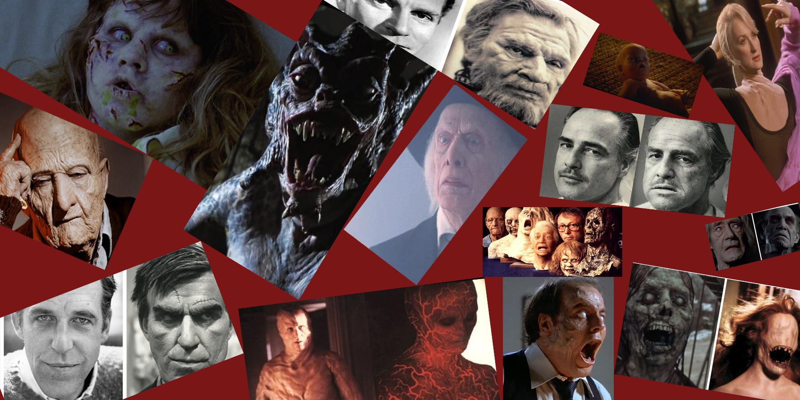

The man who revolutionized the SFX makeup industry

From The Exorcist to Altered States, Dick Smith has
been fueling nightmares for over 5 decades
The Legend of Dick Smith
1922 - Born Richard Emerson Smith in Larchmont, New York
1940's - Attended Yale University where he majored in Zoology
but spent his time applying makeup for the Yale drama group
1943 - Graduated Yale and served in WW2
1945 - A self taught makeup artist, Dick lands his first job with
NBC in a new staff position, Makeup Director, where he pioneered many makeup techniques
such as prosthetic makeup and old age makeups. Techniques that are still industry standard
1965 - Smith publishes an instructional book, Dick Smith's Do-It-Yourself
Monster Make-up Handbook, a book that will make him a legend to would be makeup artists all over America
1970 - Smith turns 33 year old Dustin Hoffman into a 121 year old character in Little Big Man
1972 - Smith applies Marlon Brando's aged makeup, inventing a dental
device called a "plumper" that would give Don Corleone's signature jowl droop. Smith also created
the first ever bleeding special effect by creating bladders that could be hidden on actors under foam latex and later
detonated with a squib
1973 - Smith would achieve legendary status for his work on The Exorcist by combining
make-up with on-set practical special effects. Creating ways to make the characters welts pulse and swell, her head spin
around, as well as send vomit shooting through the scene
1981 - Smith does the makeup for David Cronenbergs' Scanners
1984 - Smith and fellow artist Paul Leblanc win the
Academy Award for Best Makeup for their work on Amadeus. Actors often credit
Smith for making them convincing enough to not have to feel like they were acting a part
2011 - Dick Smith receives an Academy Honorary Award for his life's work
and is the first ever makeup artist to be so honored
2014 - Smith dies in Los Angeles, leaving behind a legacy that will
forever be chronicled in his life's work and carried on by countless artists which he inspired